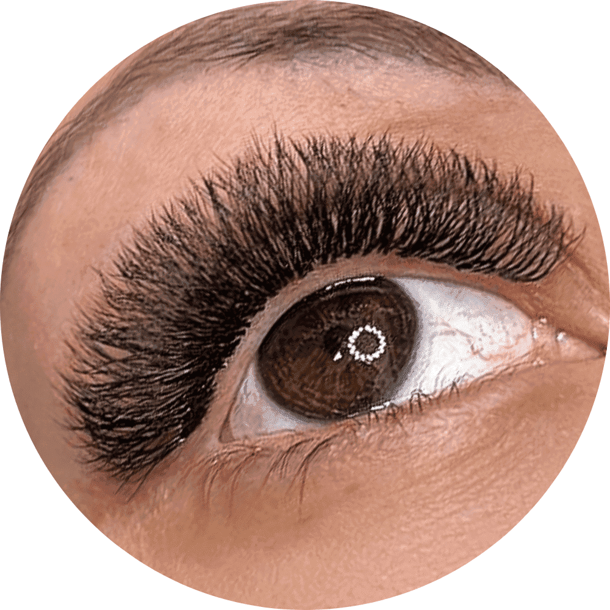
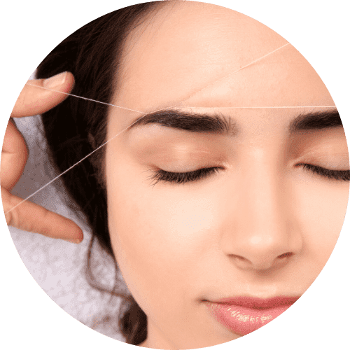

Aplicamos um fio sintético em cada fio natural. Essa técnica trás suavidade e é ideal para quem gosta de naturalidade e cílios curvados. O resultado é de acordo com a quantidade de cílios naturais que você tem.
VOLUME BRASILEIRO • 210
Manutenção de 3 semanas • R$ 140
Manutenção de 4 semanas • R$ 160
Tempo de procedimento: 2h
É uma nova técnica feita com o fio de extensão em formato de y, o que proporciona um efeito de volume moderado em menos tempo. Essa técnica deixa os cílios com efeito mais gatinho (delineado).

VOLUME LUXO PREMIUM • 250
Manutenção de 2 semanas • R$ 150
Manutenção de 3 semanas • R$ 170
Manutenção de 4 semanas • R$ 190
Tempo de procedimento: de 2h até 2h30
5x mais volume, maior durabilidade, fio tecnológico premium de alta qualidade 5D. Super leve.
Pra quem gosta de um olhar mais marcado e sem exagero essa técnica é perfeita!
VOLUME RUSSO • 270
Manutenção de 3 semanas • R$ 170
Manutenção de 4 semanas • R$ 190
Tempo de procedimento: de 2h30 até 3h
Montamos um fan na hora que vai de 3 a 6 fios com uma espessura fina formando um leque e aplicamos cada fan em um fio natural sempre fazendo o isolamento correto para que obtenha um resultado de cílios volumosos.
EFEITO FOXY EYE • 260
Manutenção de 3 semanas • R$ 170
Manutenção de 4 semanas • R$ 190
Tempo de procedimento: 2h até 2h30
A sensação de 2023. Esse efeito permite um olhar sexy sem exageros além de realçar a beleza natural do seu rosto de maneira elegante e sofisticada.
LASH LIFTING • 170
Durabilidade de até 40 dias
Tempo de procedimento: 1h 30min
É um tratamento para cílios naturais que curva, alinha e traz "efeito rímel" podendo chegar a durar até 40 dias.
Benefícios:
- Cílios mais saudáveis;
- Curvatura natural;
- Comprimento natural;
- Coloração;
- Rímel liberado após 24 horas;
SOBRANCELHAS
BROW LAMINATION • 160
Durabilidade de 30 à 45 dias
Tempo de procedimento: 40min
Essa técnica não invasiva consiste em alterar a estrutura natural do fi o da sobrancelha com produtos específicos, encorpando e trazendo mais volume à ela.
O brow lamination é ideal para:
- Quem deseja engrossar sobrancelhas finas;
- Disciplinar fios rebeldes, ondulados ou crespos para um design mais definido;
- Alterar o sentido de nascimento do pelo, para arquear, cobrir ou disfarçar falhas.
DESIGN DE SOBRANCELHAS • 40
COM COLORAÇÃO • 55
Design de sobrancelhas feito estratégicamente para cada tipo de rosto. Tratamos todas as sobrancelhas de forma extremamente individual. Priorizamos sempre a naturalidade.
LIMPEZA DE PELE
LIMPEZA DE PELE
Com extração • R$ 160
Com MICROAGULHAMENTO • R$ 300
Uma limpeza de pele regular é essencial para manter a saúde e a beleza da sua pele.
Com apenas alguns minutos de tratamento, você pode remover as impurezas, células mortas e o excesso de oleosidade que obstruem os poros, deixando sua pele com um aspecto radiante e revitalizado.
Não deixe de investir nesse cuidado essencial, sua pele merece essa atenção especial.

EPILAÇÃO FACIAL EGÍPCIA • 75
Depilação com a linha é uma técnica que consiste em utilizar um fio 100% de algodão que arranca o pelo pela raiz, inclusive aqueles fios fininhos e difíceis. Essa técnica é muito utilizada principalmente para o rosto, uma vez que essa é uma zona bastante sensível, trata-se de uma técnica indicada para pessoas com a pele extremamente sensível. Quando se fala de rosto, este inclui a depilação, por exemplo, do lábio superior (buço), queixo, sobrancelhas, testa, maçãs do rosto.